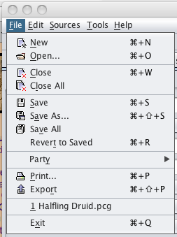

These are the File menu options that are available to use once sources have been loaded. These options are used for starting a new PC, loading an existing PC, or exporting a currently loaded PC to a file.
The New command allows the user to create a new PC based on the sources that were previously loaded. When this command is used a new PC screen appears and the user can begin to input the information needed to build a PC.
The Open command opens up a new window and prompts you to pick the PC to load. This folder is the last place that the user selected to save a PC to. The default is the Characters folder under the PCGen main directory.
The Close command closes the PC but does not exit the application. This is used primarily to close the working PC and still be running PCGen but without that PC loaded.
The Close All command closes all loaded and running PC's but does not close the application. This is used for clearing all running PC's that are being worked on.
The Save command saves the current PC that is loaded. If the character has not been saved before, a Save command another window will then open up and ask for the name of the file that the user wishes to save it as. Otherwise the Save command will automatically use the last filename used.
The Save As command allows the user to save the PC as something other than what was previously used. This can be used to change the filename or location. This will create a new file with the new name to be used but will not overwrite the preexisting file that the PC is based off of.
The Save All command is used to save all the open PC's to their respective files and folders. This is a quick way to save multiple loaded PC's at one time using the same names that they previously had before.
The Revert to Saved command reverts all changes made to the character and takes the PC back to the way it originally was when loaded. This reverts all changes made to the PC, discards any added items or updates, and takes it back to the original file.
The Party option allows the user to save all the PC's that are created as a party and allows quick loading of the party at once. This is useful for a DM who manages the PC's to load all people in the party with one file name.
The Print command sends the selected PC to the printer using one of several files.
The Export command exports the PC to a file used to view the PC. These are used primarily to view and use the PC with other applications such as Internet Browsers, Adobe Acrobat, OpenRPG, and others.
The most recently closed or saved character can be loaded directly from this menu.
The Exit command exits PCGen and prompts the user to save the application before closing.